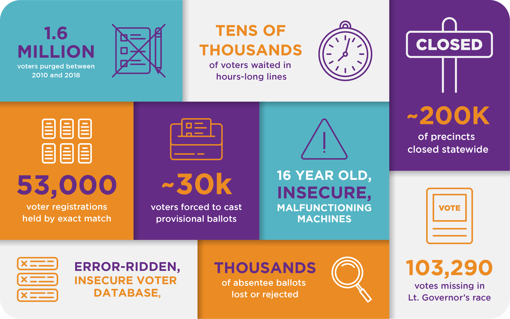

“Voter suppression is any attempt to prevent or discourage certain Americans from registering to vote or casting their ballot”. These measures often target specific groups based on race, ethnicity, political affiliation, age, or other aspects of voters’ identities. People will find a way to stop as many people from voting. As we know, voting in the United States is very important, which is why voter suppression needs to change. As the population grows there are more ways to help prevent citizens from being able to vote. Voter suppression comes in many ways, some include discriminatory voter ID and proof-of-citizenship restrictions, reduced polling place hours in communities of color, the elimination of early voting opportunities, and illegal purges of voters from the rolls.
“Systemic voter suppression, gross negligence, and erroneous administration from inadequately trained election officials prevented millions of eligible Americans all over the country from participating in the 2018 midterm elections, corrupting their individual rights to vote and eroding democracy as a whole”. In recent dates black voting rights are under threat by the white republicans in the southern states. State Rep. Yvonne Hayes Hinson was standing in front of the Florida House of Representatives, recounting being spat on for sitting at Whites-only lunch counters during the civil rights movement. Republican lawmakers have supermajorities, which allow them to override governors’ vetoes and pass virtually any piece of legislation without a single Democratic vote, but a Democrat in each legislature recently flipped to the GOP, giving Republicans a supermajority to overturn potential vetoes by their Democratic governors.
Voter suppression is not new, as it's always been around. Recently it's been given more light as fellow citizens aren’t allowed to fight. With a hard fight to expand access to the ballot box and ensure Americans’ their right to vote, efforts are underway across the country, and especially in Georgia, to undermine that progress and roll back those successes. We all have the right to vote so why is it a problem now? Voting systems should be a trustworthy electron as more security locks, tamper-evident seals, security cameras, system testing before and after elections, audits, and physical and cybersecurity access controls. There are many ways to help prevent voter suppression from continuing by finding organizations that are working to fight for a change and being more educated on the topic.
Gena Gunn McClendon started the Voter Access and Engagement Initiative at Washington University to understand a phenomenon she saw on election day in 2008.
Understanding voter suppression | Washington University
“Voter Suppression Awareness.” Fair Fight, 16 Apr. 2019, https://fairfight.com/voter-suppression-awareness/.
 Voting supression infographic